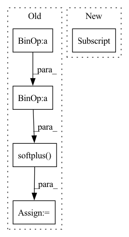

Pattern ID :37524
Before Change
def forward(self, batch_size,z=None):
z = Variable(torch.rand(batch_size, self.z_dim), requires_grad = False).to(self.device) if z is None else z
x = F.softplus(self.bn1(self.fc1(z)) + self.bn1_b)
x = F.softplus( self.bn2(self.fc2(x)) + self.bn2_b)
x = F.softplus(self.fc3(x))
return x
class ImprovedGAN(nn.Module):After Change
def forward(self, batch_size=10,z=None):
z = Variable(torch.rand(batch_size, self.z_dim), requires_grad = False).to(self.device) if z is None else z
for _ in range(self.num_hidden):
z = self.activations[_](self.bn_layers[_](self.layers[_](z)) + self.bn_b[_] )
if len(self.activations)==self.num_hidden+1:
z = self.activations[self.num_hidden](self.fc(z))
return zIn pattern: SUPERPATTERN
Frequency: 3
Non-data size: 5
Instances Fragment ID: 108063520
Project Name: ygzwqzd/lamda-ssl
Commit Name: ea5ee280fc4c0242970da002d41f42c1aaed9c96
Time: 2022-03-18
Author: 1129198222@qq.com
File Name: Semi_sklearn/Network/ImprovedGan.py
M Class Name: Generator
N Class Name: Generator
M Method Name: forward(3)
N Method Name: forward(3)
M Parent Class: nn.Module
N Parent Class: nn.Module
M File Name: Semi_sklearn/Network/ImprovedGan.py
N File Name: Semi_sklearn/Network/ImprovedGan.py
M Start Line: 74
M End Line: 78
N Start Line: 95
N End Line: 100
Before Change
pos_scores = torch.sum(torch.mul(u_embeddings, posi_embeddings), axis=1)
neg_scores = torch.sum(torch.mul(u_embeddings, negi_embeddings), axis=1)
mf_loss = torch.mean(self.softplus(-(pos_scores - neg_scores) ) )
// maxi = self.sigmoid(pos_scores - neg_scores)
// mf_loss = -1 * torch.mean(maxi)After Change
cor_users, cor_items = sample_cor_samples(self.n_users, self.n_items, self.cor_batch_size)
cor_users = torch.LongTensor(cor_users).to(self.device)
cor_items = torch.LongTensor(cor_items).to(self.device)
cor_u_embeddings = user_all_embeddings[cor_users]
cor_i_embeddings = item_all_embeddings[cor_items]
cor_loss = self.create_cor_loss(cor_u_embeddings, cor_i_embeddings)
loss = mf_loss + self.reg_weight * reg_loss + self.cor_weight * cor_loss
else: Fragment ID: 108063522
Project Name: rucaibox/recbole
Commit Name: 210deb20fdbedae80baa4e808ed08326a696027f
Time: 2020-09-12
Author: 2015201909@ruc.edu.cn
File Name: recbox/model/general_recommender/dgcf.py
M Class Name: DGCF
N Class Name: DGCF
M Method Name: calculate_loss(2)
N Method Name: calculate_loss(2)
M Parent Class: GeneralRecommender
N Parent Class: GeneralRecommender
M File Name: recbox/model/general_recommender/dgcf.py
N File Name: recbox/model/general_recommender/dgcf.py
M Start Line: 231
M End Line: 270
N Start Line: 204
N End Line: 235
Before Change
pos_pred, neg_pred = predictions[:, 0], predictions[:, 1:]
neg_softmax = (neg_pred - neg_pred.max()).softmax(dim=1)
neg_pred = (neg_pred * neg_softmax).sum(dim=1)
loss = F.softplus(-(pos_pred - neg_pred) ) .mean()
// ↑ For numerical stability, we use "softplus(-x)" instead of "-log_sigmoid(x)"
return loss
After Change
pos_pred, neg_pred = predictions[:, 0], predictions[:, 1:]
neg_softmax = (neg_pred - neg_pred.max()).softmax(dim=1)
loss = -((pos_pred[:, None] - neg_pred).sigmoid() * neg_softmax).sum(dim=1).log().mean()
// neg_pred = (neg_pred * neg_softmax).sum(dim=1)
// loss = F.softplus(-(pos_pred - neg_pred)).mean()
// ↑ For numerical stability, we use "softplus(-x)" instead of "-log_sigmoid(x)" Fragment ID: 108063508
Project Name: thuwangcy/rechorus
Commit Name: 2922cef450f5eea302fd156d17b52dc20716696d
Time: 2020-11-05
Author: THUwangcy@gmail.com
File Name: src/models/BaseModel.py
M Class Name: BaseModel
N Class Name: BaseModel
M Method Name: loss(2)
N Method Name: loss(2)
M Parent Class: torch.nn.Module
N Parent Class: torch.nn.Module
M File Name: src/models/BaseModel.py
N File Name: src/models/BaseModel.py
M Start Line: 73
M End Line: 83
N Start Line: 75
N End Line: 84